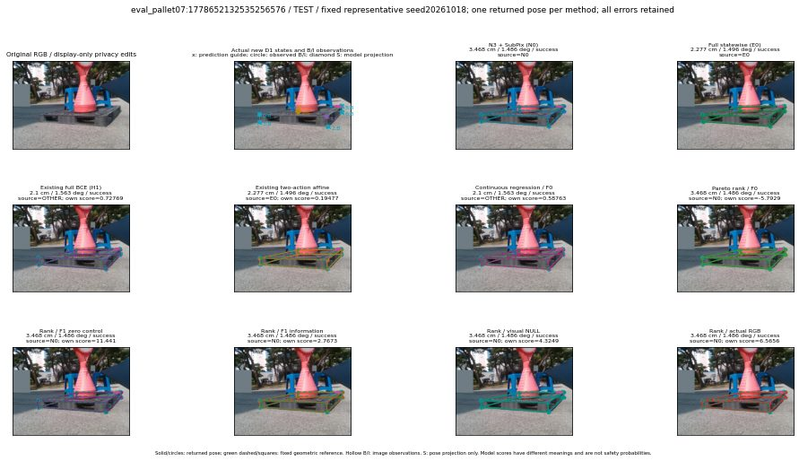

실선은 반환 자세, 초록 점선은 고정 기하 참조입니다. S는 영상 관측이 아닙니다. 점수는 모델별 의미가 다르며 보정된 안전 확률이 아닙니다. 개인정보 처리는 표시 사본에만 적용했습니다.
| 방법·seed | 위치 / 회전 / 공동성공 | 실제 출처 | 선택 후보 | 각 모델 자체 점수 |
|---|---|---|---|---|
| N0 | 3.468 cm / 1.486 deg / success | N0 | N/A | N/A |
| E0 | 2.277 cm / 1.496 deg / success | E0 | N/A | N/A |
| E0_REGENERATED | 2.277 cm / 1.496 deg / success | E0 | E0_REGENERATED | N/A |
| POSEFIX_SUBPIX_PF_ANCHOR | 4.554 cm / 0.9061 deg / success | OTHER | N/A | N/A |
| POSEFIX_SUBPIX_YOLO_ANCHOR | 4.637 cm / 0.9822 deg / success | OTHER | N/A | N/A |
| D1_H1_MLP_s20261018 | 2.1 cm / 1.563 deg / success | OTHER | G10/ORIGINAL_WD/selected | 0.7276861667633057 |
| D1_H1_MLP_s20261019 | 2.1 cm / 1.563 deg / success | OTHER | G10/ORIGINAL_WD/selected | 0.7053999304771423 |
| D1_H1_MLP_s20261020 | 2.1 cm / 1.563 deg / success | OTHER | G10/ORIGINAL_WD/selected | 0.22427091002464294 |
| D1_H1_PAIR_MLP_s20261018 | 2.277 cm / 1.496 deg / success | E0 | E0_REGENERATED | -0.4936954379081726 |
| D1_H1_PAIR_MLP_s20261019 | 2.277 cm / 1.496 deg / success | E0 | E0_REGENERATED | -0.2615888714790344 |
| D1_H1_PAIR_MLP_s20261020 | 2.277 cm / 1.496 deg / success | E0 | E0_REGENERATED | 0.15035244822502136 |
| D1_H1_PAIR_ROLE_AFFINE_s20261018 | 2.277 cm / 1.496 deg / success | E0 | E0_REGENERATED | 0.19477276504039764 |
| D1_H1_PAIR_ROLE_AFFINE_s20261019 | 2.277 cm / 1.496 deg / success | E0 | E0_REGENERATED | 0.22487857937812805 |
| D1_H1_PAIR_ROLE_AFFINE_s20261020 | 2.277 cm / 1.496 deg / success | E0 | E0_REGENERATED | 0.08881641179323196 |
| R_CONT_F0_s20261018 | 2.1 cm / 1.563 deg / success | OTHER | G10/ORIGINAL_WD/selected | 0.5876312255859375 |
| R_CONT_F0_s20261019 | 2.1 cm / 1.563 deg / success | OTHER | G10/ORIGINAL_WD/selected | 0.6502788066864014 |
| R_CONT_F0_s20261020 | 2.1 cm / 1.563 deg / success | OTHER | G10/ORIGINAL_WD/selected | 0.676117479801178 |
| R_ORDER_F0_s20261018 | 3.468 cm / 1.486 deg / success | N0 | N0 | -5.79289436340332 |
| R_ORDER_F0_s20261019 | 3.468 cm / 1.486 deg / success | N0 | N0 | -2.811093330383301 |
| R_ORDER_F0_s20261020 | 2.1 cm / 1.563 deg / success | OTHER | G10/ORIGINAL_WD/selected | 4.8290557861328125 |
| R_ORDER_F1_ZERO_s20261018 | 3.468 cm / 1.486 deg / success | N0 | N0 | 11.441006660461426 |
| R_ORDER_F1_ZERO_s20261019 | 2.1 cm / 1.563 deg / success | OTHER | G10/ORIGINAL_WD/selected | -0.11828134208917618 |
| R_ORDER_F1_ZERO_s20261020 | 2.1 cm / 1.563 deg / success | OTHER | G10/ORIGINAL_WD/selected | 5.819669246673584 |
| R_ORDER_F1_s20261018 | 3.468 cm / 1.486 deg / success | N0 | N0 | 2.7673449516296387 |
| R_ORDER_F1_s20261019 | 3.468 cm / 1.486 deg / success | N0 | N0 | 7.678656101226807 |
| R_ORDER_F1_s20261020 | 2.1 cm / 1.563 deg / success | OTHER | G10/ORIGINAL_WD/selected | 1.0431196689605713 |
| V_ORDER_NULL_s20261018 | 3.468 cm / 1.486 deg / success | N0 | N0 | 4.324871063232422 |
| V_ORDER_NULL_s20261019 | 3.468 cm / 1.486 deg / success | N0 | N0 | 3.072268009185791 |
| V_ORDER_NULL_s20261020 | 2.1 cm / 1.563 deg / success | OTHER | G10/ORIGINAL_WD/selected | 1.1225444078445435 |
| V_ORDER_RGB_s20261018 | 3.468 cm / 1.486 deg / success | N0 | N0 | 6.565559387207031 |
| V_ORDER_RGB_s20261019 | 3.468 cm / 1.486 deg / success | N0 | N0 | 2.4749205112457275 |
| V_ORDER_RGB_s20261020 | 3.468 cm / 1.486 deg / success | N0 | N0 | -8.713848114013672 |